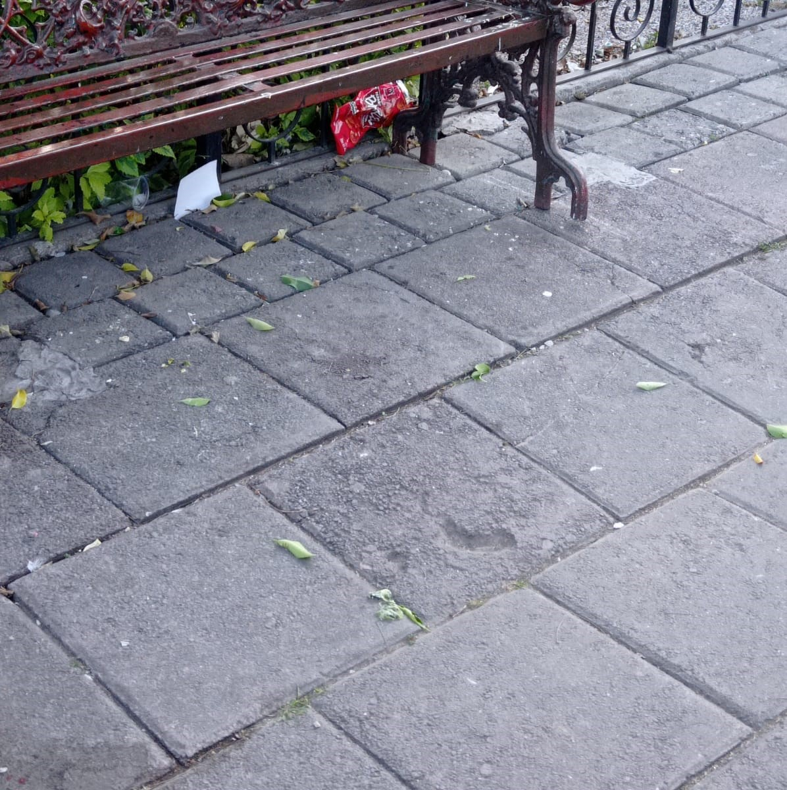

Efectos de la Contaminación
La contaminación afecta tanto al medio ambiente como a nuestra salud.
Contaminación en el centro de Tepeaca



Entrevistas sobre Contaminación


Soluciones para Reducir la Contaminación
- Reciclar y reutilizar productos
- Usar transporte público o bicicletas
- Reducir el consumo de energía
- Plantar árboles